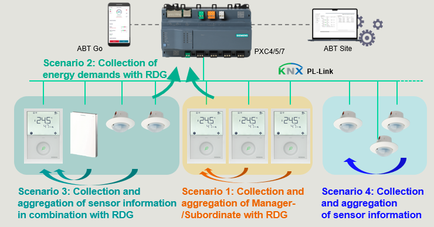
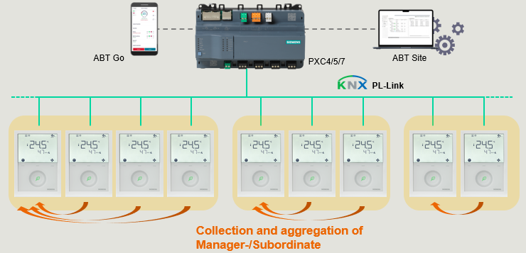
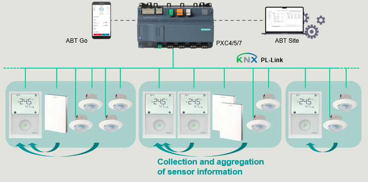
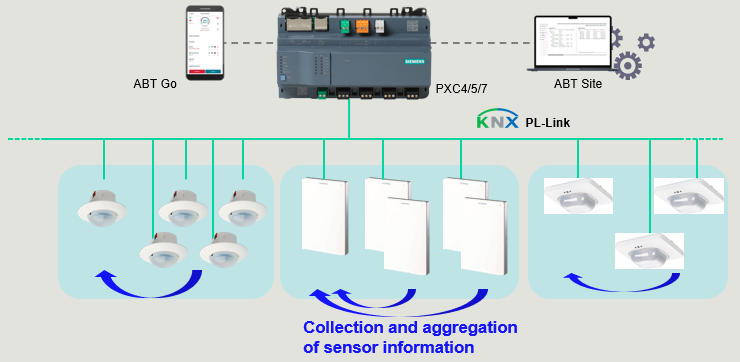

RDG2基本信息
KNX PL-Link 的集成支持各种项目场景，用于集成和评估 PXC4/5/7. 中的数据。 KNX PL-Link 设备在 ABT 现场工程中得到有效支持，因此不必为每个设备单独进行所有设置。
- Scenario 1: Collection and aggregation of manager-/subordinate with RDG2 devices
- Scenario 2: Collection of energy demands with RDG2 devices
- Scenario 3: Collection and aggregation of sensor information in combination with RDG2 devices
- Scenario 4: Collection and aggregation of sensor information
Overview of the scenarios

Desigo 系统中仅可见 RDG2 管理器设备。 RDG2 从属设备将数据传送到 RDG2 管理器设备，后者将其作为收集值传递到 Desigo 系统。
功能 | 管理器设备 | 价值 Sub-1 | 价值子 2 | 聚合 | 系统价值 |
|---|---|---|---|---|---|
温度
| 20 | 21 | 22 | 平均的 | 21 |
窗口接触 | 关闭 | 打开 | 关闭 | OR | 打开 |
存在探测器 | 离开 | 离开 | On | OR | On |
Scenario 1: Collection and aggregation of RDG2xxKN 1 manager device / n subordinate devices

- Aggregation of similar configurations (identical device types and identical application types).
- The maximum number of subordinates per manager is limited to 9 devices.
Out-of-scope
- Subordinates and sensors showing BACnet data points on primary (except field device object)
Scenario 2: Collection of energy demands with RDG2 devices

- Each RDG2 may belong to following distribution zones:
- - Heating distribution segments 1-31
- - Cooling distribution segments 1-31
- Depending on application, a RDG2 may belong to max 3 distribution segments (2 heating / 1 cooling)
- Managers and subordinates may belong to different distribution segments
Out-of-scope
- Subordinates and sensors showing BACnet data points on primary (except field device object)
Scenario 3: Collection and aggregation of sensor information in combination with RDG2 devices

- Aggregation of sensors towards RDG2..KN manager
- Average value aggregation for temperature, humidity, air quality
- OR value aggregation for presence detector, window contact
- Generation of ABI’s is always controlled by manager configuration
- Presence detector must be activated on RDG2 manager to generate ABI - Combination with scenario 1 (manager/subordinate of multiple RDG2s)
- The max. number of aggregated RDG2 (managers & subordinates) plus other sensor devices is limited to 9
Out-of-scope
- Subordinates and sensors showing BACnet data points on primary (except field device object)
- Aggregation of sensor values from devices with display, devices with LED (air quality indication), devices with binary inputs
Scenario 4: Collection and aggregation of sensor information

- Aggregation of information of same types or a subset of it
(for example, QMX3.P40 is capable to aggregate QMX3.P30 as subordinate) - Grouped aggregation of sensors towards primary directly (without RDG2)
- Average value aggregation for temperature, humidity, air quality
- OR value aggregation for presence detector, window contact
- The maximum number of aggregated devices is 10 (1x manager, 9x subordinate)
Out-of-scope
- Combinations of different device types or different configurations
- Aggregation of sensor values from devices with display, devices with LED (air quality indication), devices with binary inputs
- Subordinates showing BACnet data points on primary (except field device object)